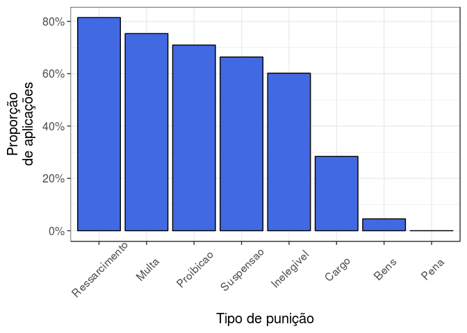
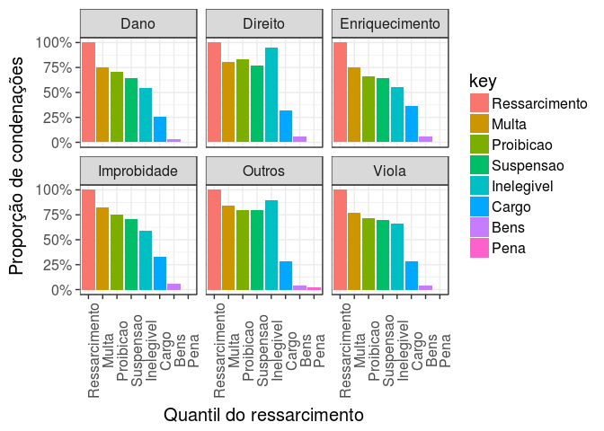
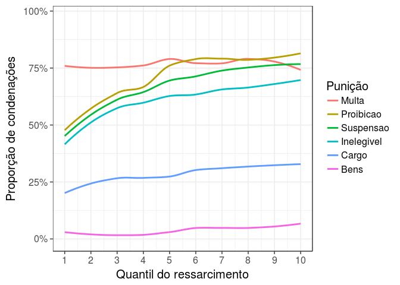
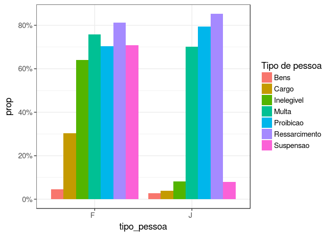

author: Frida Gomam categories: - R date: ‘2015-07-23T21:13:14-05:00’ draft: False image: ‘img/portfolio/a4-paper.jpg’ title: Punicoes weight: 0 …
library(tidyverse)
library(stringr)
library(lubridate)
library(forcats)
multiplot <- function(..., plotlist=NULL, file, cols=1, layout=NULL) {
library(grid)
# Make a list from the ... arguments and plotlist
plots <- c(list(...), plotlist)
numPlots = length(plots)
# If layout is NULL, then use 'cols' to determine layout
if (is.null(layout)) {
# Make the panel
# ncol: Number of columns of plots
# nrow: Number of rows needed, calculated from # of cols
layout <- matrix(seq(1, cols * ceiling(numPlots/cols)),
ncol = cols, nrow = ceiling(numPlots/cols))
}
if (numPlots==1) {
print(plots[[1]])
} else {
# Set up the page
grid.newpage()
pushViewport(viewport(layout = grid.layout(nrow(layout), ncol(layout))))
# Make each plot, in the correct location
for (i in 1:numPlots) {
# Get the i,j matrix positions of the regions that contain this subplot
matchidx <- as.data.frame(which(layout == i, arr.ind = TRUE))
print(plots[[i]], vp = viewport(layout.pos.row = matchidx$row,
layout.pos.col = matchidx$col))
}
}
}
knitr::opts_chunk$set(collapse = TRUE, eval = T, echo = F, error = F, message = F, comment = F)
data(tidy_cnc, package = 'cnc')
data(br_uf_map, package = 'abjData')
data(cadmun, package = 'abjData')
data(pnud_uf, package = 'abjData')
cadmun %<>% distinct(cod, uf) %>% mutate_all(as.character)
pnud_uf %<>% filter(ano == 2010) %>%
select(uf, ufn, popt) %>%
mutate(uf = as.character(uf)) %>%
inner_join(cadmun, c('uf' = 'cod')) %>%
select(id = uf.y, ufn, popt)
tidy_improb <- tidy_cnc %>%
filter(tipo_pena == "Trânsito em julgado",
!assunto_penal_any,
year(dt_pena) >= 2009,
year(dt_pena) <= 2015,
vl_ressarcimento <= 5.877361e+07)
project_dir <- normalizePath("../..")
source(sprintf("%s/R/add_uf_consolidado.R", project_dir))
Os cadastrados do CNIA podem sofrer 7 tipos de punição.


FALSE Warning: Removed 6 rows containing non-finite values (stat_smooth).

